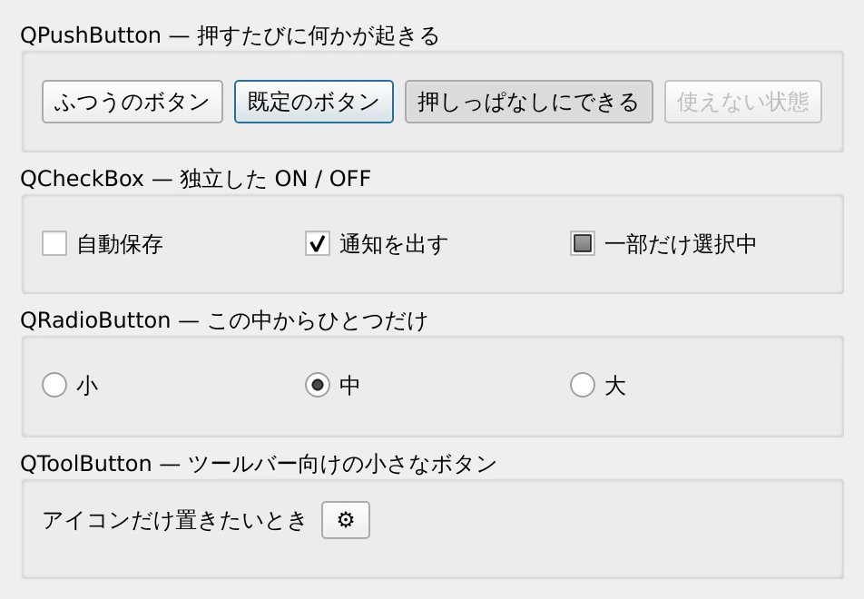
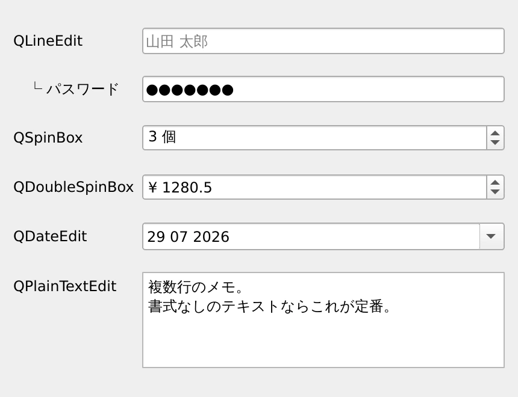
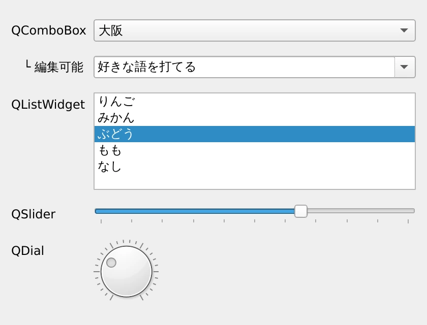
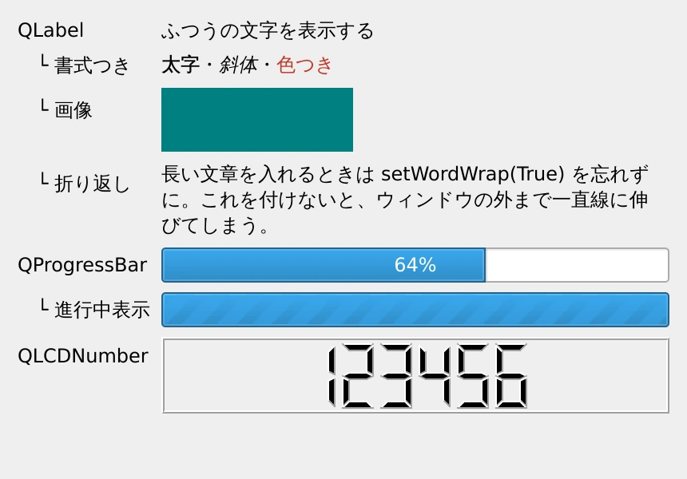
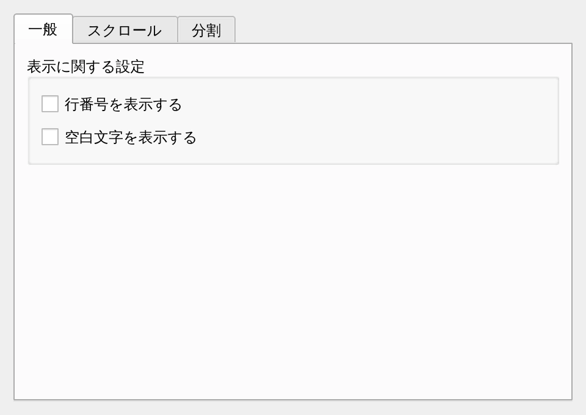

第 5 章·読了目安 14 分
第5章 ウィジェット図鑑 — よく使う部品カタログ
ボタン・入力欄・選択肢・表示・まとめ役。実際の画面写真つきで「やりたいことに対してどれを使うか」が引けるカタログです。
ここまでで、部品を並べる方法は分かりました。 この章は「どんな部品があるのか」のカタログです。 最初から全部覚える必要はありません。 作りたい画面が出てきたときに、ここへ戻ってきて引く使い方をしてください。
操作させる — ボタン系
"""ボタン系ウィジェット。押す・切り替える・選ぶ、という「操作」を担当する部品たち。実行: python ch05_buttons.py"""import sysfrom PySide6.QtCore import Qtfrom PySide6.QtWidgets import (QApplication, QButtonGroup, QCheckBox, QFormLayout, QGroupBox, QHBoxLayout, QPushButton, QRadioButton, QToolButton, QVBoxLayout, QWidget)app = QApplication(sys.argv)window = QWidget()window.setWindowTitle("ボタン系ウィジェット")window.resize(470, 330)outer = QVBoxLayout(window)# --- QPushButton ---------------------------------------------------------box = QGroupBox("QPushButton — 押すたびに何かが起きる")row = QHBoxLayout(box)row.addWidget(QPushButton("ふつうのボタン"))default = QPushButton("既定のボタン")default.setDefault(True) # Enter キーで押されるボタンrow.addWidget(default)toggle = QPushButton("押しっぱなしにできる")toggle.setCheckable(True) # ON/OFF を保持するtoggle.setChecked(True)row.addWidget(toggle)disabled = QPushButton("使えない状態")disabled.setEnabled(False)row.addWidget(disabled)outer.addWidget(box)# --- QCheckBox -----------------------------------------------------------box = QGroupBox("QCheckBox — 独立した ON / OFF")row = QHBoxLayout(box)row.addWidget(QCheckBox("自動保存"))checked = QCheckBox("通知を出す")checked.setChecked(True)row.addWidget(checked)tri = QCheckBox("一部だけ選択中")tri.setTristate(True) # ON / OFF / どちらでもない の 3 状態# Qt6 では enum を Qt.CheckState.PartiallyChecked のように最後まで書く。tri.setCheckState(Qt.CheckState.PartiallyChecked)row.addWidget(tri)outer.addWidget(box)# --- QRadioButton --------------------------------------------------------box = QGroupBox("QRadioButton — この中からひとつだけ")row = QHBoxLayout(box)group = QButtonGroup(window) # 排他の範囲を明示しておくと安全for i, text in enumerate(["小", "中", "大"]): radio = QRadioButton(text) radio.setChecked(i == 1) group.addButton(radio) row.addWidget(radio)outer.addWidget(box)# --- QToolButton ---------------------------------------------------------box = QGroupBox("QToolButton — ツールバー向けの小さなボタン")form = QFormLayout(box)tool = QToolButton()tool.setText("⚙")form.addRow("アイコンだけ置きたいとき", tool)outer.addWidget(box)window.show()sys.exit(app.exec())
| 使うもの | こんなとき | 主なシグナル |
|---|---|---|
QPushButton | 押したら何かが起きる | clicked |
QCheckBox | 独立した ON / OFF。複数選べる | toggled |
QRadioButton | いくつかの中からひとつだけ | toggled |
QToolButton | ツールバーに置く小さなボタン | clicked |
QRadioButton は「同じ親を持つもの同士」で自動的に排他になります。
そのため、1 つの画面に 2 組のラジオボタンを置くと、全部で 1 つしか選べなくなってしまいます。
組ごとに QGroupBox で囲むか、
QButtonGroup に登録して範囲をはっきりさせてください。
setCheckable(True) を付けると、押すたびに ON / OFF が切り替わる
トグルボタンになります。「太字」ボタンのような用途に使います。
状態は isChecked() で取れます。
入力させる — テキストと数値
"""入力系ウィジェット — 文字・数値・日付を受け取る部品たち。実行: python ch05_inputs.py"""import sysfrom PySide6.QtCore import QDatefrom PySide6.QtWidgets import (QApplication, QDateEdit, QDoubleSpinBox, QFormLayout, QLineEdit, QPlainTextEdit, QSpinBox, QWidget)app = QApplication(sys.argv)window = QWidget()window.setWindowTitle("入力系ウィジェット")window.resize(430, 330)form = QFormLayout(window)# 1 行のテキスト入力。name = QLineEdit()name.setPlaceholderText("山田 太郎")form.addRow("QLineEdit", name)# パスワード入力は echoMode を変えるだけ。password = QLineEdit()password.setEchoMode(QLineEdit.EchoMode.Password)password.setText("himitsu")form.addRow(" └ パスワード", password)# 整数。範囲・単位・きざみを指定できる。count = QSpinBox()count.setRange(1, 99)count.setValue(3)count.setSuffix(" 個")form.addRow("QSpinBox", count)# 小数。price = QDoubleSpinBox()price.setRange(0, 1_000_000)price.setValue(1280.5)price.setPrefix("¥ ")price.setDecimals(1)form.addRow("QDoubleSpinBox", price)# 日付。カレンダーも出せる。day = QDateEdit()day.setDate(QDate(2026, 7, 29))day.setCalendarPopup(True)form.addRow("QDateEdit", day)# 複数行のテキスト。書式なしの入力なら QTextEdit よりこちらが軽い。memo = QPlainTextEdit()memo.setPlainText("複数行のメモ。\n書式なしのテキストならこれが定番。")memo.setFixedHeight(80)form.addRow("QPlainTextEdit", memo)window.show()sys.exit(app.exec())
| 使うもの | こんなとき | 値の取り出し方 |
|---|---|---|
QLineEdit | 1 行のテキスト | text() |
QPlainTextEdit | 複数行のテキスト（書式なし） | toPlainText() |
QTextEdit | 複数行のテキスト（書式あり） | toPlainText() / toHtml() |
QSpinBox | 整数 | value() |
QDoubleSpinBox | 小数 | value() |
QDateEdit | 日付 | date() |
edit.setPlaceholderText("入力例を薄字で出す")edit.setClearButtonEnabled(True) # 右端に × ボタンが出るedit.setEchoMode(QLineEdit.EchoMode.Password) # 入力を伏字にするedit.setMaxLength(20) # 文字数の上限
数字だけ入れさせたい、といった制限は QValidator で行えます。
ただし「数値を入れさせたい」だけなら、素直に QSpinBox を使うほうが簡単で確実です。
from PySide6.QtGui import QIntValidatoredit.setValidator(QIntValidator(0, 999))選ばせる — 候補から選ぶ
"""選択系ウィジェット — 候補の中から選ばせる部品たち。実行: python ch05_choosers.py"""import sysfrom PySide6.QtCore import Qtfrom PySide6.QtWidgets import (QApplication, QComboBox, QDial, QFormLayout, QListWidget, QSlider, QWidget)app = QApplication(sys.argv)window = QWidget()window.setWindowTitle("選択系ウィジェット")window.resize(420, 320)form = QFormLayout(window)# 折りたたまれた選択肢。省スペース。combo = QComboBox()combo.addItems(["東京", "大阪", "名古屋", "福岡", "札幌"])combo.setCurrentIndex(1)form.addRow("QComboBox", combo)# 入力もできる選択肢。editable = QComboBox()editable.setEditable(True)editable.addItems(["python", "pyside6", "qt"])editable.setCurrentText("好きな語を打てる")form.addRow(" └ 編集可能", editable)# 一覧から選ぶ。項目数が多いならこちら。listw = QListWidget()listw.addItems(["りんご", "みかん", "ぶどう", "もも", "なし"])listw.setCurrentRow(2)listw.setFixedHeight(96)form.addRow("QListWidget", listw)# 連続した値をつまんで決める。slider = QSlider(Qt.Orientation.Horizontal)slider.setRange(0, 100)slider.setValue(65)slider.setTickPosition(QSlider.TickPosition.TicksBelow)slider.setTickInterval(10)form.addRow("QSlider", slider)# つまみを回す入力。音量やパンなどに。dial = QDial()dial.setRange(0, 100)dial.setValue(30)dial.setNotchesVisible(True)dial.setFixedSize(64, 64)form.addRow("QDial", dial)window.show()sys.exit(app.exec())
| 使うもの | 向いている場面 |
|---|---|
QComboBox | 候補が多くても場所を取らない。既定はこれ |
QListWidget | 候補を一覧で見せたい。複数選択もできる |
QSlider | 連続した値。音量、明るさなど |
QDial | つまみを回すイメージが合うとき |
QComboBox には似たシグナルが 2 つあります。
選択された項目の文字列が欲しいなら currentTextChanged、
何番目かが欲しいなら currentIndexChanged です。
項目を addItems() で追加している最中にもシグナルが飛ぶので、
追加が全部終わってから connect() するのが安全です。
見せる — 表示専用
"""表示系ウィジェット — 入力を受け取らず、見せることに徹する部品たち。実行: python ch05_displays.py"""import sysfrom PySide6.QtCore import Qtfrom PySide6.QtGui import QPixmapfrom PySide6.QtWidgets import (QApplication, QFormLayout, QLabel, QLCDNumber, QProgressBar, QWidget)app = QApplication(sys.argv)window = QWidget()window.setWindowTitle("表示系ウィジェット")window.resize(430, 300)form = QFormLayout(window)# ただの文字。form.addRow("QLabel", QLabel("ふつうの文字を表示する"))# 簡単な書式なら HTML のような書き方が使える。rich = QLabel('<b>太字</b>・<i>斜体</i>・<span style="color:#c0392b">色つき</span>')form.addRow(" └ 書式つき", rich)# 画像も QLabel で表示する。pixmap = QPixmap(120, 40)pixmap.fill(Qt.GlobalColor.darkCyan)image_label = QLabel()image_label.setPixmap(pixmap)form.addRow(" └ 画像", image_label)# 長い文を折り返す。既定では折り返さないので注意。wrapped = QLabel( "長い文章を入れるときは setWordWrap(True) を忘れずに。" "これを付けないと、ウィンドウの外まで一直線に伸びてしまう。")wrapped.setWordWrap(True)form.addRow(" └ 折り返し", wrapped)# 進み具合。bar = QProgressBar()bar.setValue(64)form.addRow("QProgressBar", bar)# 終わりが読めない処理は、範囲を 0-0 にすると「ぐるぐる」になる。busy = QProgressBar()busy.setRange(0, 0)form.addRow(" └ 進行中表示", busy)# 数字を大きく見せたいとき。lcd = QLCDNumber()lcd.setDigitCount(6)lcd.display(123456)lcd.setFixedHeight(48)form.addRow("QLCDNumber", lcd)window.show()sys.exit(app.exec())
QLabel は既定では折り返しません。
長い文章を入れると、そのぶんウィンドウが横に広がろうとします。
label.setWordWrap(True) を必ず付けてください。
まとめる — 入れ物になるウィジェット
"""まとめ役のウィジェット — 部品をグループ化して整理する。実行: python ch05_containers.py"""import sysfrom PySide6.QtCore import Qtfrom PySide6.QtWidgets import (QApplication, QCheckBox, QGroupBox, QLabel, QPushButton, QScrollArea, QSplitter, QTabWidget, QVBoxLayout, QWidget)app = QApplication(sys.argv)window = QWidget()window.setWindowTitle("まとめ役のウィジェット")window.resize(480, 340)outer = QVBoxLayout(window)# --- QTabWidget: 画面を切り替える -----------------------------------------tabs = QTabWidget()# タブ 1: QGroupBox で関連する設定をひとまとめに。page1 = QWidget()page1_layout = QVBoxLayout(page1)group = QGroupBox("表示に関する設定")group_layout = QVBoxLayout(group)group_layout.addWidget(QCheckBox("行番号を表示する"))group_layout.addWidget(QCheckBox("空白文字を表示する"))page1_layout.addWidget(group)page1_layout.addStretch()tabs.addTab(page1, "一般")# タブ 2: QScrollArea で入りきらない中身をスクロールさせる。scroll = QScrollArea()scroll.setWidgetResizable(True) # ★これを忘れると中身が潰れるinner = QWidget()inner_layout = QVBoxLayout(inner)for i in range(1, 21): inner_layout.addWidget(QPushButton(f"項目 {i}"))scroll.setWidget(inner)tabs.addTab(scroll, "スクロール")# タブ 3: QSplitter で境界をドラッグして幅を変えられるようにする。splitter = QSplitter(Qt.Orientation.Horizontal)left = QLabel("左\n（境界をドラッグできる）")left.setAlignment(Qt.AlignmentFlag.AlignCenter)right = QLabel("右")right.setAlignment(Qt.AlignmentFlag.AlignCenter)splitter.addWidget(left)splitter.addWidget(right)splitter.setSizes([300, 150])tabs.addTab(splitter, "分割")outer.addWidget(tabs)window.show()sys.exit(app.exec())
| 使うもの | 役割 |
|---|---|
QGroupBox | 関連する設定を枠と見出しでまとめる |
QTabWidget | タブで画面を切り替える |
QScrollArea | 入りきらない中身をスクロールさせる |
QSplitter | 境界をドラッグして領域の広さを変えられる |
QStackedWidget | タブなしで中身だけを差し替える（ウィザードなど） |
setWidgetResizable(True) を忘れると、
中身が最小サイズに潰れて表示されます。
QScrollArea を使うときは、ほぼ必ずこの 1 行が要ります。
scroll = QScrollArea()scroll.setWidgetResizable(True) # ★これscroll.setWidget(中身のウィジェット)ウィジェット共通で使えること
すべてのウィジェットは QWidget を継承しているので、次のことは全部に効きます。
w.setEnabled(False) # 灰色にして操作できなくするw.setVisible(False) # 消す（場所も消える）w.setToolTip("マウスを乗せると出る説明")w.setStatusTip("ステータスバーに出る説明")w.setFixedWidth(120) # 幅を固定w.setFont(QFont("Meiryo", 14)) # フォントw.setFocus() # キーボードの入力先にする
QFormLayout を使って、次の項目を持つ「設定画面」を作ってみてください。
- ユーザー名（
QLineEdit） - フォントサイズ（
QSpinBox、8〜72、単位は「pt」） - テーマ（
QComboBox、ライト / ダーク / 自動） - 「起動時に自動更新を確認する」（
QCheckBox） - 下部に［OK］［キャンセル］を右寄せで
この章のまとめ
- ウィジェットは「操作 / 入力 / 選択 / 表示 / まとめ / 一覧」の 6 種類で考える。
QLabelにはsetWordWrap(True)、QScrollAreaにはsetWidgetResizable(True)。- ラジオボタンの排他範囲は
QGroupBoxかQButtonGroupではっきりさせる。 - 大量のデータを並べたくなったら、この章ではなく第 10 章へ。